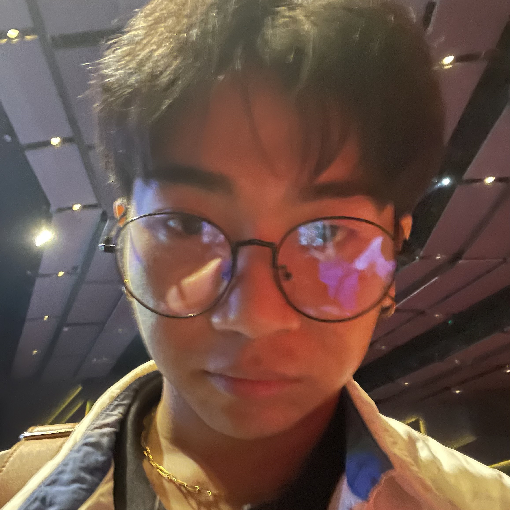

Computer Engineering Student | Data Science & Machine Learning | Robotics & Embedded Systems
Hi, I'm Renjo! I'm a BS Computer Engineering student with a Minor in Data Science at De La Salle University - Manila.
I enjoy turning data into insight, building things that sense and move, and creating music and dance on the side.
This Career e-Portfolio brings together my resume, academic work, leadership experience, and creative projects.
About Me
I am a Computer Engineering student with a Minor in Data Science at De La Salle University - Manila, and a consistent Dean's Lister for six terms. I have a strong interest in data science, machine learning, and robotics. I use Python for data analysis, C/C++ and Arduino for embedded systems, and HTML, CSS, and JavaScript for web development.
Years of freelance music production have taught me creativity, self-direction, and how to see a project through from client brief to final delivery. Through student organizations, community volunteering, and dance, I have also learned leadership and how to work well in a team.
Career Goal
I am looking for an internship in data analytics, machine learning, or robotics, where I can apply my technical skills to real-world problems and keep learning from experienced engineers.
What I Bring
Interests
Music production, street dance, machine learning, robotics, and data science.
Languages
English, Filipino
Contact Me
You may also reach me through the following
- LinkedIn: linkedin.com/in/renjovil
-
 DLSU Email:
renjovil_joseph_lascano@dlsu.edu.ph
DLSU Email:
renjovil_joseph_lascano@dlsu.edu.ph
- Mobile: (+63) 927 353 5217
- Facebook: Renjovil Joseph Lascano
- Instagram: @renjovil
Renjovil Joseph V. Lascano
Computer Engineering Student
-
Laguna Bel-Air 3, Biñan, Laguna
Philippines -
(+63) 927 353 5217
-
-
Technical Skills
-
Python85%
-
Web Dev80%
-
C/C++75%
-
Arduino75%
-
MATLAB70%
Creative Tools
-
Logic Pro X
-
Final Cut Pro
Profile
Computer Engineering student with a Minor in Data Science at De La Salle University and consistent Dean's Lister (6 terms) with a strong interest in data science, machine learning, and robotics. Experienced in Python for data analysis, C/C++ and Arduino for embedded systems, and web development using HTML, CSS, and JavaScript. Brings creativity and self-direction from years of freelance music production, alongside leadership and teamwork developed through student organizations and community volunteering. Seeking an internship in data analytics, machine learning, or robotics to apply technical skills to real-world problems.
Professional Experience
-
Sep 2024 - Sep 2025
Externals Officer - DLSU SYNTAX
Contacted and coordinated with external partners. Provided technical support for SMC 2025: Into the Stellar Trail. Awarded Best Externals Officer, AY 2024-2025 Term 1.
-
Sep 2024 - Sep 2025
Executive for Student Opportunities - DLSU ECG
Sourced and promoted internship, scholarship, and career opportunities for members.
-
Jan 2023 - Present
Freelance Music Producer - Self-employed
Music production and video editing services for dance teams. Produce, arrange, mix, and master original music using Logic Pro X; edit music videos and promotional content in Final Cut Pro; manage projects end-to-end from client brief to revisions and final delivery.
Accomplishments
-
Consistent Dean's Lister at DLSU for 6 terms (4x First Honors, 2x Second Honors), CGPA 3.41 / 4.00
-
Best Externals Officer, DLSU SYNTAX, AY 2024-2025 Term 1
-
Developed an Academic Advising System for the DLSU Department of Electronics and Computer Engineering (LBYCPG3)
Education
-
2023 - Present
BS Computer Engineering, Minor in Data Science - De La Salle University - Manila
CGPA: 3.41 / 4.00. Relevant coursework: Data Science (DATA100), Engineering Data Analysis, Software Design, Data Structures and Algorithms, Programming Logic and Design, Fundamentals of Electrical and Electronic Circuits.
-
2021 - 2023
Senior High School - STEM Strand (University of Santo Tomas)
Member of USTSHS Galvanize, USTSHS STEM Society, USTSHS Virtuoso, and USTSHS El Tigre Robótica.
Organizations & Volunteer Work
Member, DLSU ACCESS
Member, DLSU DSS
Trainee and Performer, La Salle Dance Company - Street
Trainee and Performer, Team Package Makers
Volunteer, DLSU COSCA-LOVE: FTK 2025, AKV 2024 and 2025; completed Basic FSL training
Interests
Academic Work Samples
Projects from my coursework that show how I apply what I learn, from software design and data analysis to embedded systems.
-
Academic Advising System
Developed an Academic Advising System for the DLSU Department of Electronics and Computer Engineering, designed to streamline student advising and record-keeping.
-
Career e-Portfolio Website
This website. Built from an HTML5 Boilerplate base with a CSS Grid and Flexbox layout, a responsive purple theme, a live greeting and clock, and a validated contact form with spam and rate-limit checks.
-
Machine Learning Projects
Built predictive models and data analysis tasks in Python using scikit-learn and pandas, covering data cleaning, model training, and evaluation.
-
Data Science Coursework
Applied statistics and Python to explore, visualize, and draw conclusions from real datasets as part of my Minor in Data Science.
-
Projectile Motion Simulator
Developed an interactive UI that visualizes projectile motion, letting users enter parameters such as launch angle, initial velocity, and gravity.
-
Arduino Robotics Projects
Built line-tracing robots, mission-based robots, and robot soccer competitors, including work with USTSHS El Tigre Robótica, exploring embedded systems and sensors.
Leadership, Work & Volunteer Experience
Student Leadership
-
Externals Officer – DLSU SYNTAX
- Contacted and coordinated with external partners.
- Provided technical support for SMC 2025: Into the Stellar Trail.
- Awarded Best Externals Officer, AY 2024-2025 Term 1.
-
Executive for Student Opportunities – DLSU ECG
- Sourced and promoted internship, scholarship, and career opportunities for members.
Freelance Work
-
Freelance Music Producer – Self-employed
- Produce, arrange, mix, and master original music using Logic Pro X.
- Edit music videos and promotional content using Final Cut Pro.
- Manage projects end-to-end, from client briefs to revisions and final delivery.
Volunteer Work
-
Volunteer – DLSU COSCA-LOVE
Volunteered in DLSU community engagement activities and completed Basic Filipino Sign Language (FSL) training.
Organizations & Performing Arts
-
Member – DLSU ACCESS and DLSU DSS
Active member of student organizations in computer engineering and data science.
-
Trainee and Performer – La Salle Dance Company - Street and Team Package Makers
Train and perform street dance routines, building discipline, teamwork, and confidence on stage.
Education
Higher Education
BS Computer Engineering, Minor in Data Science
De La Salle University - Manila
2023 – Present · CGPA 3.41 / 4.00 · Dean's Lister (6 terms)
Relevant coursework: Data Science (DATA100), Engineering Data Analysis, Software Design, Data Structures and Algorithms, Programming Logic and Design, Fundamentals of Electrical and Electronic Circuits
Senior High School
Science, Technology, Engineering, and Mathematics (STEM) Strand
University of Santo Tomas - Senior High School
2021 – 2023
Organizations: USTSHS Galvanize, USTSHS STEM Society, USTSHS Virtuoso, USTSHS El Tigre Robótica
Junior High School
Grades 7 – 10
Caritas Don Bosco School
2016 – 2021
Achievements
-
Consistent Dean's Lister
De La Salle University, 6 terms: 4x First Honors and 2x Second Honors, with a CGPA of 3.41 / 4.00.
-
Best Externals Officer
DLSU SYNTAX, AY 2024-2025 Term 1, for securing and coordinating external partnerships.
-
Minor in Data Science
Pursuing a Minor in Data Science alongside BS Computer Engineering, building skills in Python, statistics, and data analysis.
-
Academic Advising System
Developed for the DLSU Department of Electronics and Computer Engineering (LBYCPG3) to streamline student advising and record-keeping.
-
Basic FSL Training
Completed Basic Filipino Sign Language training through DLSU COSCA-LOVE.
References & Testimonials
-
Character and Professional References
Available upon request. Please reach out through the contact form or email renjovil_joseph_lascano@dlsu.edu.ph.